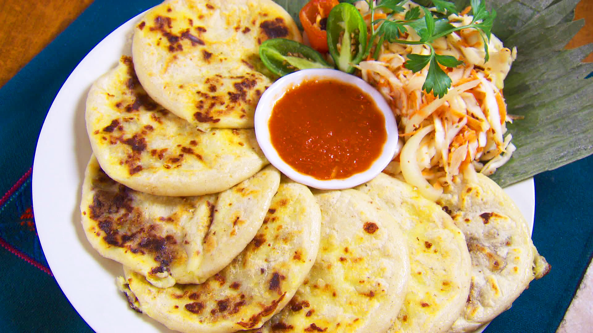

Pupusas

Pupusas—masa flour pouches filled with beans, cheese, and/or meat—are a signature dish of El Salvador. While making them can be a touch tricky at first, it’s not hard once you get the hang of it. Former BA senior food editor Rick Martinez breaks down the technique in these helpful step-by-step photos. Once you’re well acquainted with Salvadoran pupusas, you’ll definitely want to experiment with the fillings. Cooked chicken, carnitas, or chorizo all work well—just make sure the meat is chopped or shredded finely enough that it sits neatly in the dough, and drain off any excess liquid before using it. (You can make the filling a day or so in advance if you prefer to break up the work.) No matter the filling, pupusas pair perfectly with Curtido, a Salvadoran fermented cabbage relish, and this Salsa Roja.
Ingredients
- ¼ cup plus ⅓ cup vegetable oil, divided ½
- medium white onion, halved, broken up into individual layers (petals)
- 15-ounce can Central American red beans or red kidney beans
- Kosher salt
- 3 cups instant corn masa flour (such as Maseca Instant Corn Masa Mix)
- 4 ounces grated queso Oaxaca or salted mozzarella (preferably Polly-o; about 1 cup)
- Curtido (Salvadoran Cabbage Relish) and Salvadoran Salsa Roja (for serving)
Steps
- Heat ¼ cup oil in a large skillet over medium-high. Cook onion, tossing occasionally, until pieces are charred on all sides, 10–12 minutes (oil will smoke and onion will pop, so be careful). Don’t stop cooking at “browned,” they need to go further.
- Transfer onion to a blender, reserving oil in pan. Add beans and their liquid to blender and purée, gradually adding ¼ cup warm water if mixture is too thick and blender is struggling, until smooth.
- Heat onion oil over medium. Transfer bean mixture to skillet and cook, stirring and scraping bottom of pan occasionally, until mixture is the consistency of thick Greek yogurt, 5–10 minutes; season with salt. Let cool (refried beans will thicken as they sit, and that’s exactly what you want); set aside.
- Using a stand mixer fitted with the paddle attachment, beat masa flour, 3 tsp. salt, and 2⅔ cups hot water on medium speed until dough is very thick and sticky (alternatively, mix in a large bowl about 1 minute). Let rest, uncovered, 15 minutes.
- Meanwhile, mix cheese and bean mixture in a medium bowl.
- Combine remaining ⅓ cup oil and 1 cup warm water in a medium bowl. Dip both hands in this mixture and rub your hands together to coat. This will prevent dough from sticking to your hands, and will hydrate dough as you assemble.
- Divide dough into 12 balls (about ¼ cup each), keeping them covered with a damp towel so they don’t dry out. With 1 ball in the palm of your hand, use your thumb of the opposite hand to create an indentation in the center. Pinch sides to create a well for the filling (it should look like half of a coconut shell). Fill hole with 2 Tbsp. bean mixture. Pinch dough around filling to enclose (it’s okay if some is poking out), then gently flatten to a 4½–5" disk, dipping your hands in oil-water as needed. Repeat with remaining dough and bean mixture (you may have some filling left over).
- Cook pupusa in a large cast-iron skillet or griddle over medium heat until center slightly puffs up and pupusa is browned in spots, 3–4 minutes per side. If filling leaks out, simply scrape off pan after pupusa has cooked.
- Serve with cabbage relish and salsa roja alongside.